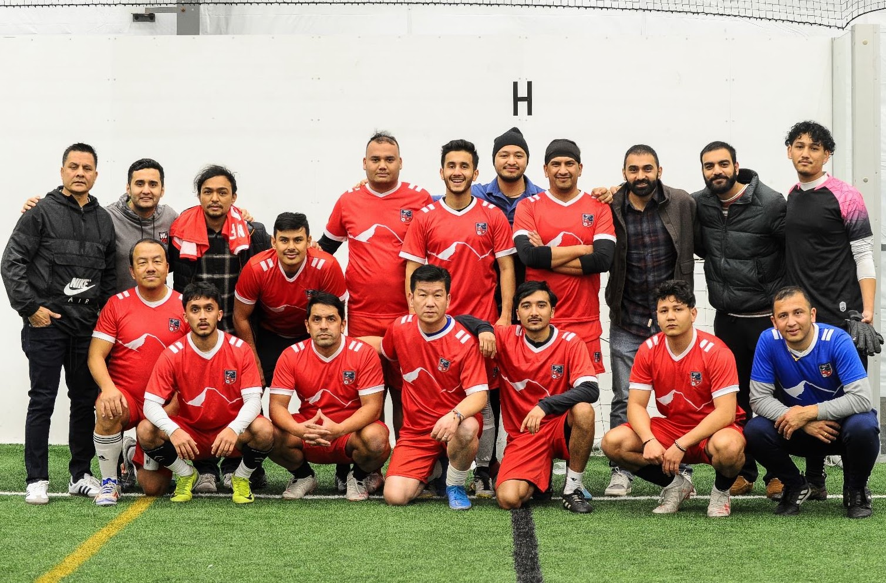
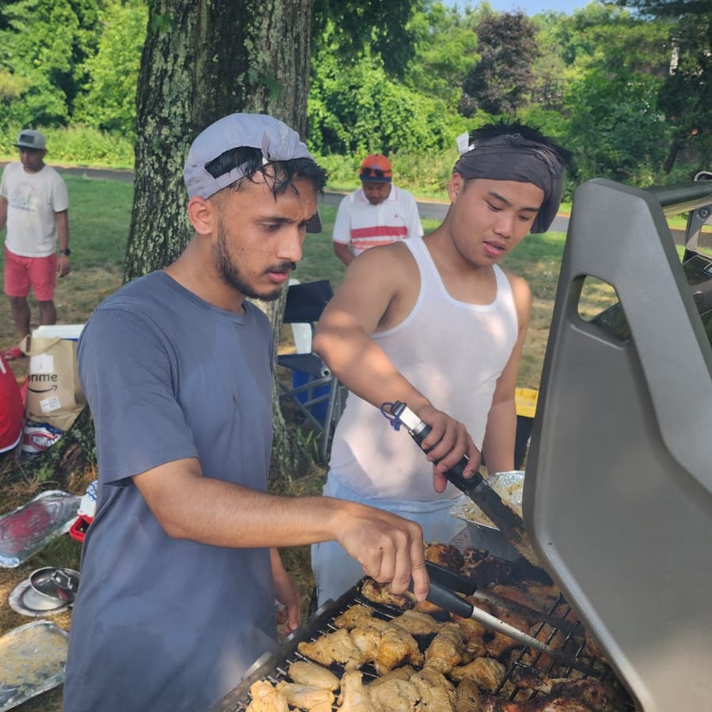

More Than Just a Game — A Movement of Unity
What began as a few friends from Nepal kicking a soccer ball on weekend mornings has blossomed into New Jersey's largest, most vibrant Nepali football community.
Who We Are & How It Started
We are a passionate collective of soccer lovers who believe in playing the game with fairness, respect, and integrity. Whether it's a high-stakes championship cup or a relaxed Sunday morning scrimmage, we are dedicated to clean play and warm camaraderie.
Our mission is rooted in youth engagement, cultural pride, and building a supportive environment where players of all ages, skill levels, and backgrounds are welcomed with open arms.
"Soccer is our universal language. It connects generations, sparks lasting friendships, and keeps our Nepali cultural roots thriving in the heart of New Jersey."

